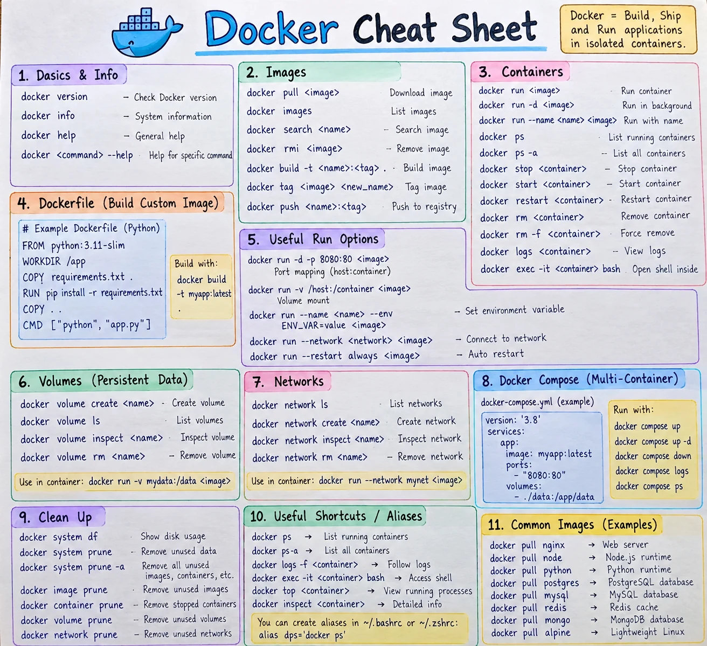

📋 Command Cheatsheet
A one-page visual poster, plus a searchable list of every command below it.
1 Docker cheat sheet poster
The essentials on one page. Click the poster to open it full size, or download the high-resolution PNG to print it or keep it on your phone.


⚠️ Two small notes on the poster:
- Section 1 reads "Dasics" — it means Basics.
- The Compose example starts with
version: '3.8'. Current Docker Compose ignores that line and prints a warning, so you can leave it out.
🔍 Search every command
| Command | Description |
|---|